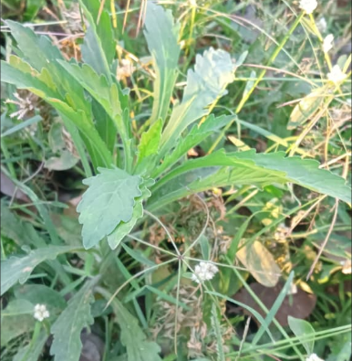
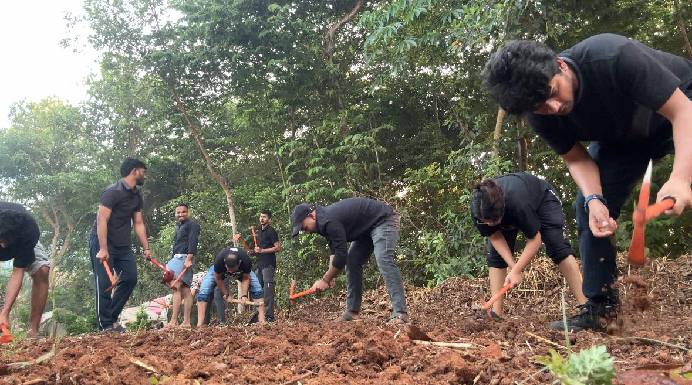
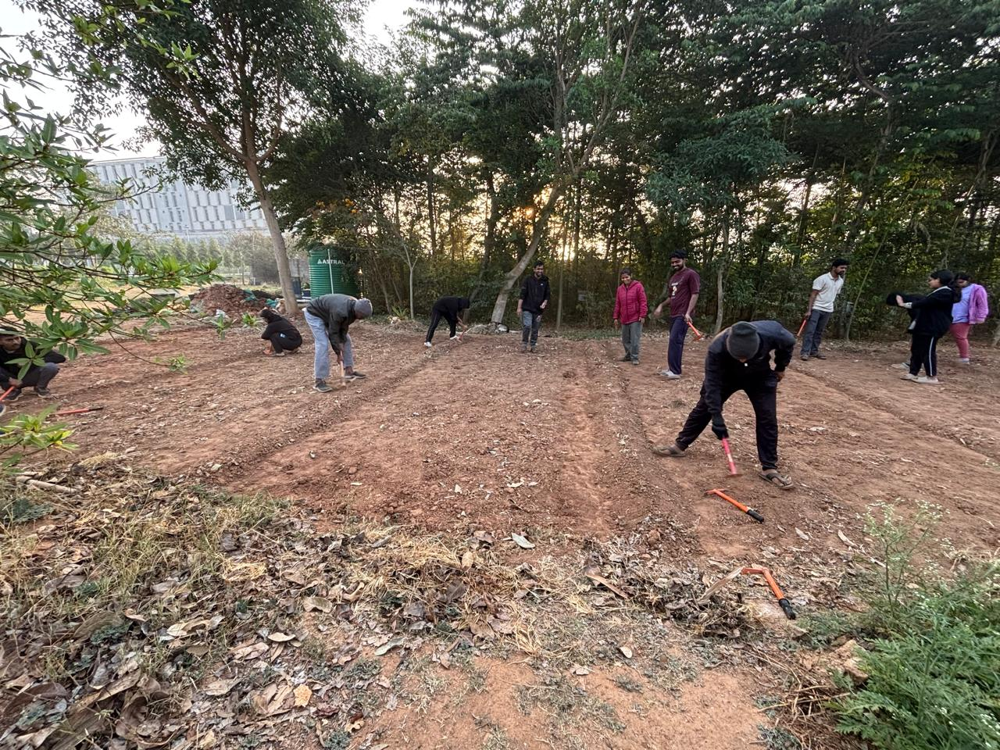
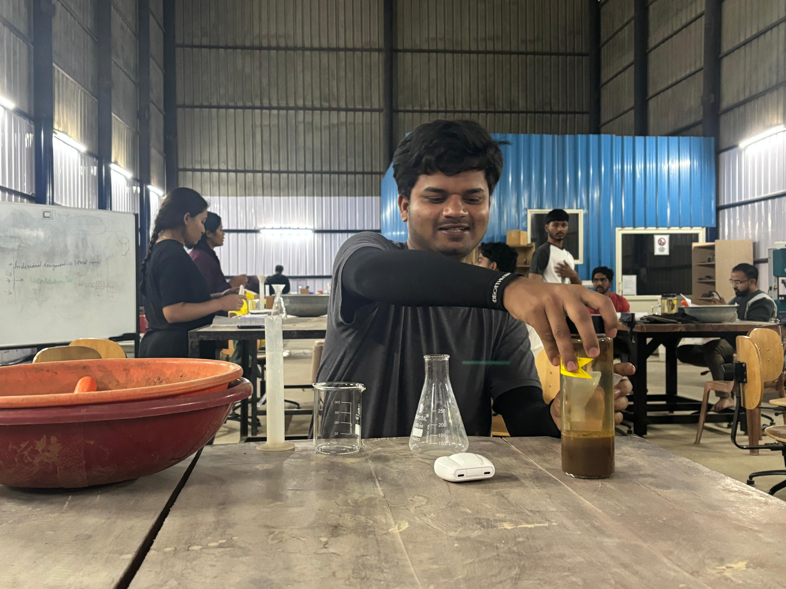
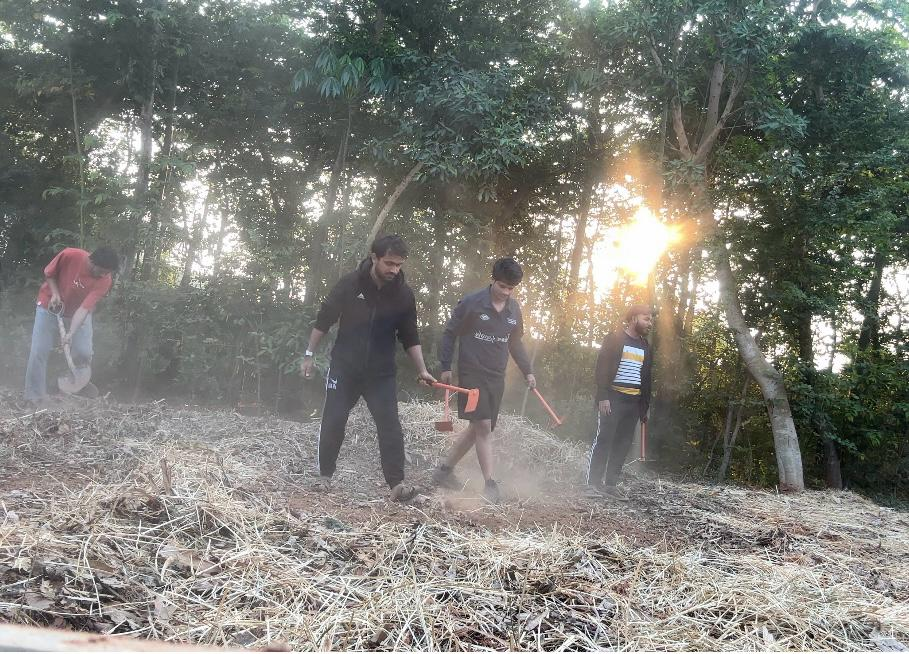
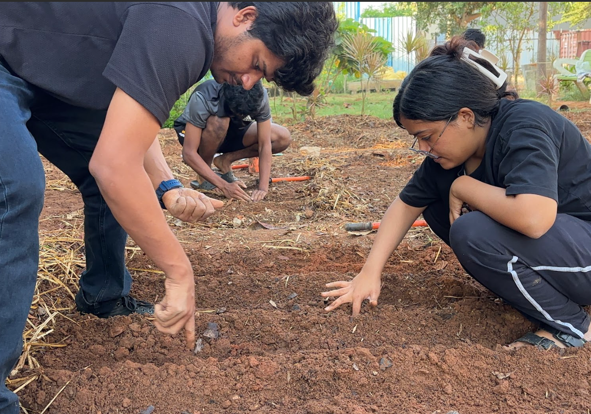
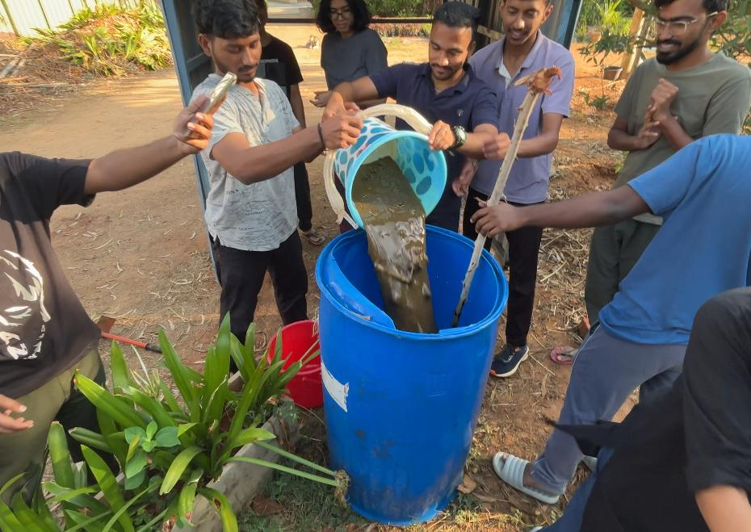
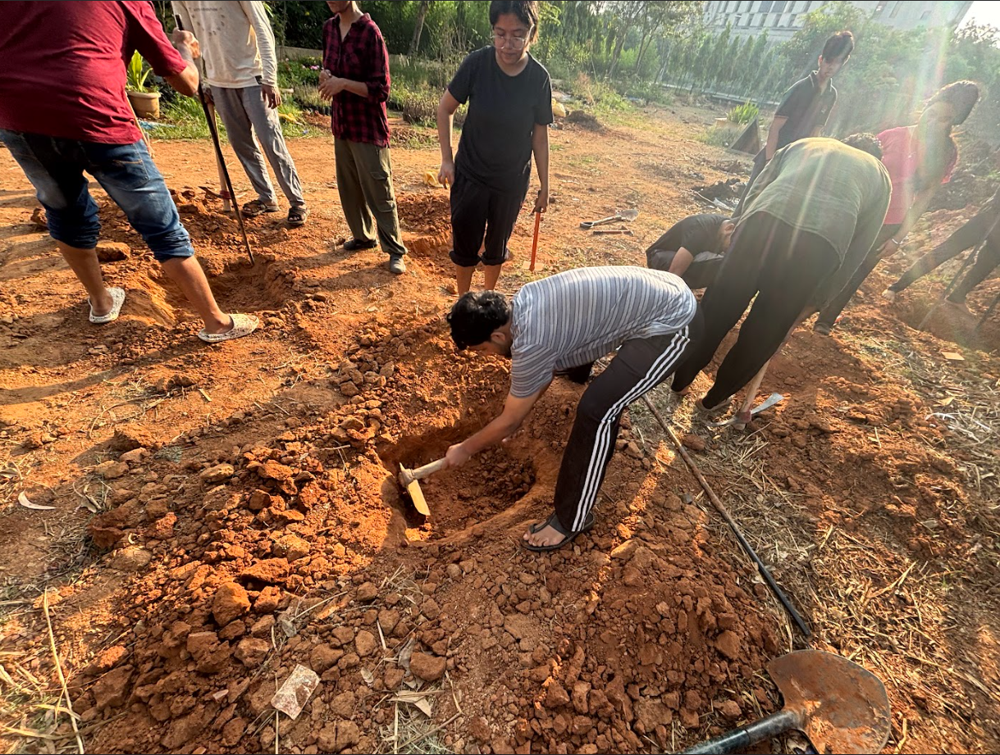

Are you interested in knowing how to sustainably grow food? We are too, and we are currently part of a
class
where we are learning how to do it in real time. Join us by starting sustainable farming on your own
little
plots of land!
This works better as a group activity – so recruit your friends and family. As we have learned, this can
also
be a wonderful opportunity to bond with them. After learning how to do this, you will not go hungry even
if you
end up with a food shortage during the apocalypse!
Step 1: Weeding
Identify the piece of land on which you wish to work. Start by pulling out all of the
existing
plants –
eatables, weeds, and others so that it is free of all impediments. Before doing this,
you
can
also conduct a
biodiversity count exercise – making note of all the different microorganisms that
inhabit
the
land!
Weeding might be a time-consuming and lengthy process but it is very important as it is
the first
step in
making the land ready for planting. If weeds remain they will take up a lot of space and
resources.
Take help from others if needed. It might take more than one session to complete the
weeding.
Items you may need: shovel, small pick mattock, your hands!

Step 2: Tilling and Leveling
Using gardening tools, begin to till the land. This involves breaking up the soil by
digging it
up to
loosen it further. Once tilling is done (which you will know by seeing if the packed up
soil has
been
loosened everywhere) one should work on leveling the land. Leveling largely is making
the soil
look even
throughout – distributing soil, filling spots where it is lower with more and similarly
reducing
it wherever
there are higher lumps.

Step 3: Boundary Creation
This is especially important if you are working on multiple plots of land at the same
time. Be sure to
create raised lines along the edges of each plot – which will be your boundaries, that
you can
walk upon as
you should not trample the growing crops.
The boundary must be a line of soil which is significantly higher than the rest of the
plot, and
the soil
should also be more packed there. Once done you should be able to walk on the boundary
without
it breaking
down – test it once to make sure it is firm.

Step 4: Soil Testing
Soil testing is an extremely important process when starting out with land that you may
not
know
much
about. It will help you understand what the composition of your soil is looking like,
and
what
is needed for
it to help your crops flourish and grow well. The composition of these three elements –
sand,
silt and clay
tell one about how fertile the soil is and how much and what kind of inputs need to be
added.

Ideal soil composition: Sand – 40%, Silt – 40%, Clay – 20%.
You may think that soil testing is a fancy process that involves sending it to a lab – we had the
same
doubts, but not to worry! Here are two simple types which we were taught:
Test Type 1: Determining Composition
Items needed: transparent bottle, soil from your land, water, scale for
measuring.
Begin by collecting some soil from your land, ensuring it is free of any stones and pebbles
(organic matter
need not be discarded). Pour a small amount of soil into the bottle, then fill it up with water.
Shake the
bottle thoroughly for a few minutes. Wait for it to settle and note down your first reading –
measuring the
total soil and different layers present using a scale. Then shake the bottle again and wait for
around half
an hour, after which you note down another reading. Measure the total soil and different layers
present,
then calculate the percentage of each.
After one day has passed, you will observe that the layers have had time to settle and become
more visible.
Undertake a final, third reading of the soil. This will help you understand the percentage of
each layer.
Test Type 2: Water Retention Soil Test
Items needed: a tube or transparent narrow container, beaker or cup with
measurements,
soil from your land, water, scale for measuring, filter paper, funnel, timer/stopwatch (can use
phone).
Begin by setting up the funnel and paper filter over the tube. Fill up the filter up to 80% with
soil, and
load up your beaker/cup with 50 ml of water. Slowly pour the water over the soil and begin
timing once you
start. You will notice the water start dripping into the tube. Keenly observe as it happens, and
stop the
timer after the last drop of water, when the dripping stops.
Measure the amount of water left in the tube, and using this and the amount of water poured,
calculate the
water that the soil has retained (50 ml − amount of water in the tube = water retained).
Calculate the
percentage of water retained. The water retention capacity tells us about the soil's potential
and the
inputs that will be needed.
Our water retention rate was around 38%, and our instructor gave us the
following
recommendations – light mulching, using 4 kg of Cocopeat, 3 kg of compost and 5 kg of Neem.
For each person or group, the recommendations will differ based on the size of your land, the
environmental
conditions and the soil retention levels. We will be linking external resources that you can
refer to!
Step 5: Mulching
Mulching is an extremely important process for sustainable gardening. It is an iterative
process
which will
take weeks to complete. Before we begin mulching, we need to ensure that we have organic
matter
which we can
use – this can be agricultural waste (like leaves, straw, grass clippings) or your
kitchen
compost. You can
also inquire with any nearby gardeners or farmers about whether you can take this waste
from
them.

Once you have your mulch ready, you start by covering the soil entirely with a layer of the
organic matter.
After leaving it for about a week or so, you can remove the mulch from a small portion of the
land (around
¼th) and note how it has changed. Observe the changes in soil moisture, biodiversity, etc. and
note it down.
In your next few sessions, each time remove the layer of mulch and start adding the inputs which
you have
noted that you need for your land. For example, we started by removing the mulch, adding
cocopeat all over
the land and then putting the mulch back. We repeated the process after a few days using compost
and finally
neem.
After adding all of the inputs and covering the land with the mulch, lastly water the land once,
taking
care to cover the entire area.
Allowing the mulch to remain over the land for some time is essential because as it stays there
and
decomposes, it enriches the soil in multiple ways and allows the inputs we have added to seep in
thoroughly.
It increases biodiversity while also protecting it from the sun and increasing soil moisture.
Step 6: Sowing of Seeds
After finishing mulching and before sowing, plan how to divide your plot into four
sections based on crop category: legumes, leafy greens, underground crops, and
transplant crops like tomatoes, brinjal, and chillies. Each category has its own
planting technique, so it helps you to sketch out a rough diagram of your plot
beforehand and decide where each will go.
Make sure to leave walking pathways between sections, you will need to move through the
plot daily for watering without stepping on anything. Lining these pathways with mulch
works well, as it also continues enriching the soil beneath.

Planting Techniques by Crop Type
For leafy greens like methi, spinach, and coriander, use the broadcast method -
scatter the seeds across the surface of the soil.
For legumes like french beans and green peas, plant them one by one with one
palm's span of space between each seed.
For underground crops like onions and carrots, create small raised rows and
plant each seed into an approximately 2.5 cm deep hole, again with one palm's width between
each.
For transplant crops, first fill trays with a mixture of topsoil, compost, and
cocopeat, plant the seeds carefully without going too deep, and transfer them to the ground
after a few days once they have sprouted.
Once all sections are sown, water the land thoroughly. From this point onwards, watering needs to
happen once a day.
Step 7: Jeevamrutha
Jeevamrutha is a traditional Indian bio-fertilizer made from cow dung, cow urine, gram
flour, jaggery, a handful of local soil, and water. It introduces beneficial
microorganisms into the soil that improve its health and fertility over time.
Since it relies entirely on locally available materials, it is affordable and accessible
for farmers of any scale and also something you can make yourself.

Preparation Steps:
To prepare it, you will need a large container – we used one with a 100-litre capacity. Collect
fresh cow dung around 2.5kg and 2.5 litres of cow urine from a nearby farm if possible. Add the
other ingredients like 1 kg of jaggery, besan (gram flour) and soil by mixing them and stirring
continuously.
Once prepared, leave the mixture to ferment for a few days. Stir it every day during this period
– this is important and should not be skipped.
Application: After it has matured, apply it directly to your seedlings. Before
you do, measure and note down the height of your plants. This gives you a baseline to compare
against later and helps you track whether the Jeevamrutha is making a visible difference.
Step 8: Composting
Composting is the process of converting organic waste into nutrient-rich material that
can be returned to the soil. When organic waste goes to landfills instead, it releases
methane, one of the biggest contributors to global warming.
Composting at even a small scale helps prevent this, and the compost produced is one of
the best natural inputs you can give your land.

Types of Composting
There are two types of composting: aerobic and anaerobic. Aerobic composting,
which uses airflow, is what you want to aim for. Anaerobic composting, which happens without
air, leads to foul smells, maggot infestations, and methane production.
Most people who try composting at home and give up are unknowingly doing it anaerobically,
because of a few common mistakes: using a fully closed container, adding too much wet waste
without balancing it with dry material, or putting in processed food scraps.
Setting Up Proper Composting
To compost properly, your setup needs airflow throughout. Use a container with mesh or gaps in
the walls, ensure there is space at the bottom for moisture to drain, and stir the pile
regularly to keep oxygen moving through.
If you are making a compost pit instead, dig it to around 2.5 ft × 2.5 ft × 3 ft deep. Layer
organic kitchen waste into the pit along with dry material, we used compost maker made from
paddy husk and continue adding and layering as you go.
Done right, composting has no bad smell, breaks down quickly, and gives you some of the richest
natural input you can add to your soil.